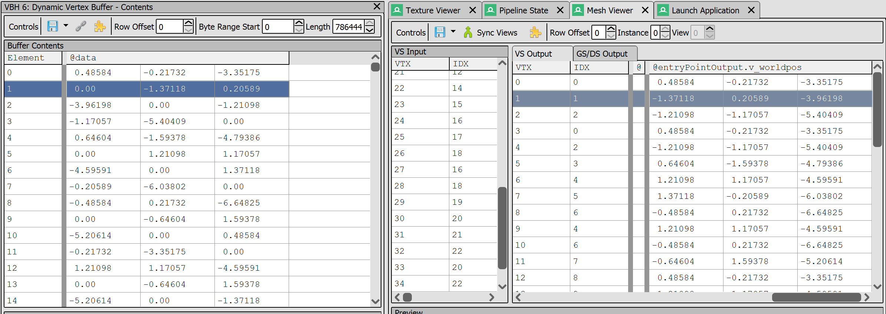
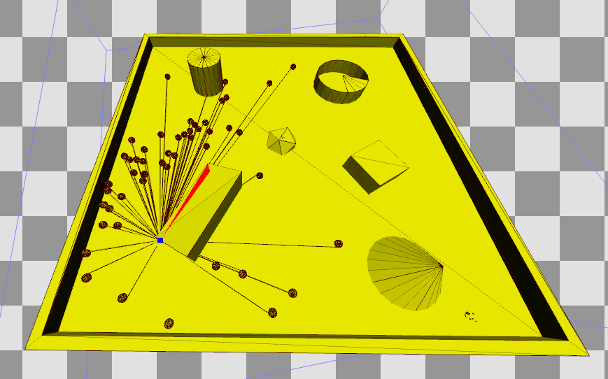
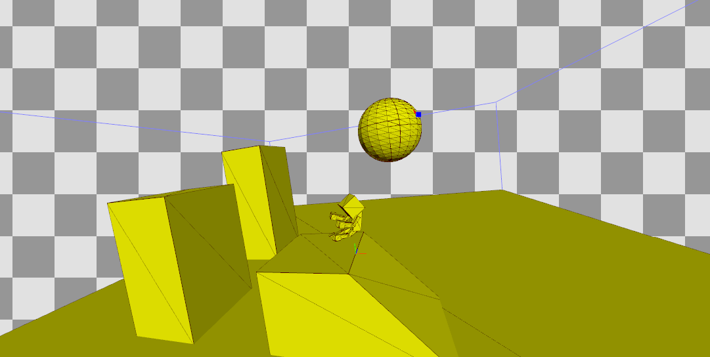
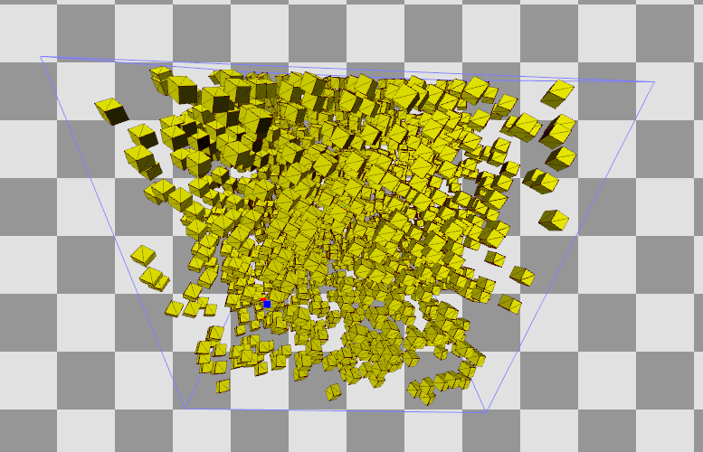

Posted on
First StepsThis week, I started implementing the first part of my planned shadowing algorithm. I decided to implement this algorithm inside of my game engine project, RavEngine, because I know how it works inside-and-out, and it already implements some of the major use cases that this algorithm needs to handle, namely skeletal meshes and GPU instancing. I could have gone with Unreal Engine, since its source code is available and making direct source changes is a requirement for implementing something as invasive as a new shadow system, but I decided against it because Unreal is many times larger and more complicated than RavEngine, so, having to learn Unreal's internal code would have slowed me down considerably. I decided against modifying Godot for a similar reason. RavEngine is written in C++17, and uses the BGFX shader language (which is based on GLSL), so those are the languages that I am using to implement the shadow system.
While I don't know yet exactly what methods I will end up using for rendering the shadows themselves, I can implement one important part already - the "unified mesh." One of the reasons why rendering shadows is expensive is because the game has to re-render the scene for each light (and for some light types, multiple times per light), so the number of draw calls can skyrocket quickly.
To reduce this, my algorithm will assemble one mesh as it renders the scene during the unshadowed pass which contains the final positions of all geometry rendered during that frame. It also accounts for instanced meshes, which result in multiple entries in the final mesh buffer. The effect of doing this is that, for opaque shadows, only one draw call is required per lighting pass, instead of N draw calls.
Building this unified mesh efficiently is extremely important. I added code to the vs_store macro in the RavEngine shader library header,
a header all shaders are required to include, which writes the final world position of the vertex to the buffer. The backend
calculates all of the necessary offsets for you, so the user does not need to do anything, or even know that this operation is taking place.
Currently the system assumes that all objects will cast shadows and so always includes them in the buffer. In most games, this is almost never the case, so I will need to
support optional shadow casting in the future.
Once all vertex positions have been written, there is a second problem to solve. RavEngine requires all meshes to have both a vertex and an index buffer for efficiency, but this means that the engine must generate a matching index buffer for the unified mesh. I decided to solve this using a compute shader. After invoking the deferred geometry pass, the engine invokes one compute dispatch per draw call in the geometry pass. This compute shader copies in parallel the indices from that draw call's index buffer into the unified index buffer, accounting for instancing, but more importantly, it also increments the index values themselves so that they properly correspond. The resulting shader was very simple, but getting there was quite tricky!
Bugs, and Fixing or Working Around ThemAlmost immediately, I encountered a problem. As of writing, BGFX's Metal backend has a bug where trying to write to an intermediate buffer from a vertex shader causes a crash. This bug does not happen on the Vulkan or DirectX backends, so I currently do all of my development on RavEngine's Windows version. This will present a problem in the future though, because the only mobile devices that RavEngine supports is iOS devices through Metal, so I will need to fix this bug (and PR it to the official BGFX repository).
The second oddity I encountered had to do with outputting vertex positions. Despite marking in the shader the datatype of the buffer as vec3,
when writing the data I saw extra zeros and noticed that it was writing vec4s instead. To fix this, I had to change the datatype in the shader to float,
account for this when calculating the offset, and write the x,y, and z of the vertex individually. This fix works on Vulkan but it does not work on DirectX12, which
appears to only be able to address buffers on increments of vec4, so I will need to implement a special case for it.

Notice the presence of extra zeros in the leftmost column (the outputs) compared to the rightmost column (the true vertex positions). This bug caused the
unified mesh to turn into a mess of triangles, as shown in the below video:
I also struggled quite a bit to figure out how to calculate the offsets for the compute shader. I kept getting gaps with zeros in them inside my
index buffer, causing erroneous repeating of the first vector in the data, leading situations shown in this image:

The fix was to add a ceil call when calculating the number of compute dispatch threads so that enough were generated to span the whole mesh.
Below are some images showing the correct unified meshes for some different scenes:

In this RenderDoc screenshot, the skinned mesh (sitting on the block) is correctly posed. The environment is also made of two separate meshes.

This unified mesh was created from an instanced draw call.
My next step in implementing this algorithm is to investigate ways to generate silhouettes, to determine if that is the right way forward.
Next postPrevious post